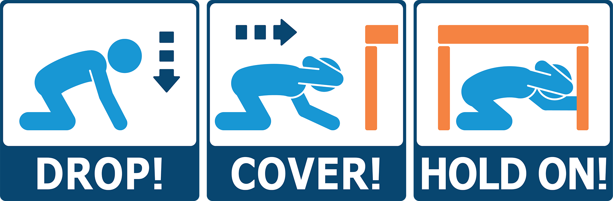

Step 1: Drop, Cover, and Hold On
Instead of standing in a doorway during an earthquake, practice the "Drop, Cover, and Hold On" technique. Drop to the ground, take cover under a sturdy piece of furniture, and hold on until the shaking stops.
Step 2:Move Away from Doors
If you are near a doorway when an earthquake begins, move away from the door and seek shelter under a sturdy piece of furniture or against an interior wall.
Avoid standing in doorways as they do not provide adequate protection from falling objects or collapsing structures.
Step 3: Choose a Safe Location
Identify safe locations in your home, school, or workplace where you can take shelter during earthquakes.
These locations should be away from windows, glass doors, exterior walls, and heavy furniture that could topple over.
Step 4: Stay Inside
In most cases, it is safer to stay indoors during earthquakes rather than attempting to exit the building. Moving during the shaking increases the risk of injury from falling debris or collapsing structures.
Stay inside until the shaking stops and it is safe to evacuate.
Step 5: Follow Emergency Procedures
Follow the emergency procedures and protocols established by your school or workplace for earthquake safety.
Listen to instructions provided by teachers, staff, or emergency responders and take appropriate action to protect yourself.
Step 6: Stay Calm
Remain calm and composed during earthquakes. Focus on taking the necessary steps to protect yourself and others rather than panicking.
Stay alert and ready to respond to changes in the situation.

Step 7: Practice Drills
Participate in earthquake drills and practice the "Drop, Cover, and Hold On" technique regularly.
Familiarize yourself with the safest locations to take shelter in different settings and environments.
Step 8: Educate Others
Share information about the dangers of standing in doorways during earthquakes with your classmates, friends, and family members.
Encourage them to practice safe earthquake safety techniques and avoid doorways during shaking.